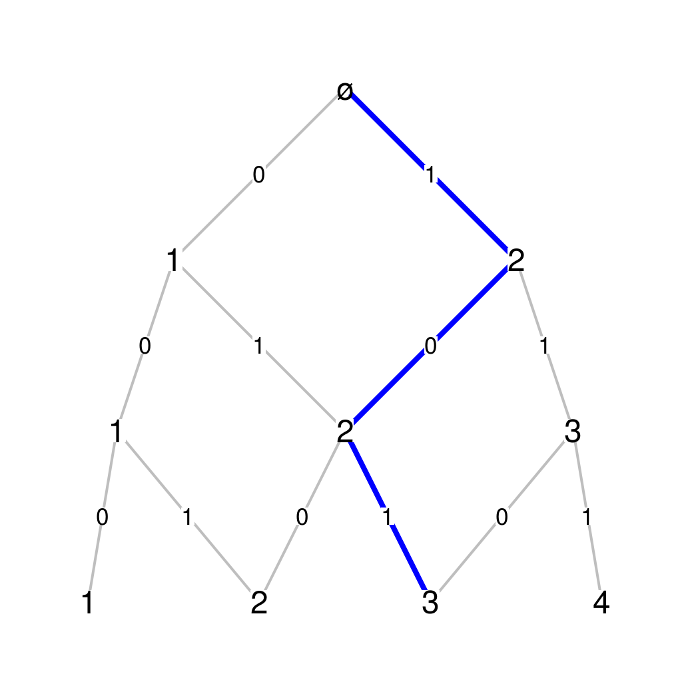

Hey, ergodicians! How do you draw your Bratteli graphs ? Are you using Xfig ? Are you typing raw pstricks or TikZ code ? Are you crazy ? I have written the Bgraph R function, and it does the job without pain. Feel free to take it here.
Bratelli graphs - The Pascal example
A Bratteli graph, such as the Pascal graph shown below, is a graded graph whose edges only connect vertices from one level to some vertices of the next level.

Pascal graph
Such a graph is defined by a sequence of incidence matrices\(M_n\). Denoting by \(c_n\) the number of vertices at level \(n\), the incidence matrix \(M_n\) is a \(c_n \times c_{n+1}\) matrix showing all connections between level \(n\) and level \(n+1\). A “\(0\)” means there’s no edge, a “\(1\)” means there’s one edge, a “\(2\)” means there’s a double edge, etc. The first three incidence matrices of the Pascal graph are
Pascal_Mn <- function(n){
M <- matrix(0, nrow=n+1, ncol=n+2)
for(i in 1:(n+1)){
M[i, ][c(i, i+1)] <- 1
}
return(M)
}
Given a function fun_Mn taking a nonnegative integer n as argument and returning an incidence matrix, such as the Pascal_Mn function, my Bgraph function, based on the diagram package, draws the corresponding Bratteli graph from the root level to a desired level N. Its arguments are:
The effects of most of the arguments will be illustrated below. The ellipsis ... is intended for additional arguments to the coordinates function of the diagram package. For example the hor argument allows to rotate the picture.
The figure above has been generated by this code, except that this time we change its orientation with the hor argument:
The path shown in blue on the figure, is given as the sequence of labels on the edges of this path. The first_vertex argument, intended to be 0 or 1, controls the label of the first vertex at each level. The user can decide to show the edge labels of the blue path only with the labels_path argument. By setting the only_end argument to TRUE, only the vertex labels at the last level are shown:
By setting the USE.COLNAMES argument to TRUE, the vertex labels appearing at level \(n\) are the column names of \(M_n\). For example, on figure below we display the binomial numbers on the vertices Pascal graph, which give the number of paths from the root vertex. We also show the effect of the ellipse_vertex argument.
Bratteli graphs are well-known in ergodic theory since Vershik has shown that every invertible measure-preserving transformations can be represented as a transformation on the set of paths of such a graph.
The canonical Bratteli graph of an odometer is given by incidence matrixes full of “\(1\)”:
This graph is related to Cantor expansions. For the previous example, the paths starting from the root level and going to the third level provide a representation of the Cartesian product \(\{0,1,2\}\times\{0,1,2,3\}\times\{0,1,2,3,4\}\).
Homogeneous trees
A homogeneous tree is a Bratteli graph. I use a trick to generate the incidence matrices, the same I already used before.
Mathematicians like \(\LaTeX\) figures. The tikzDevice package allows to convert any R figure to a TikZ figure. For example we generate below the Pascal graph with the binomial numbers \({n \choose k}\) as vertex labels. We set the argument LaTeX to TRUE in the Bgraph function to generate edge labels in \(\LaTeX\) math mode.
Currently, the rendering of the colored path is not correct, because the two edges of a double edge appears in color. The label edges are not correct too. This will be fixed in a next version of the Bgraph function.